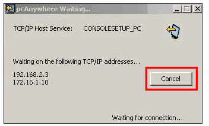
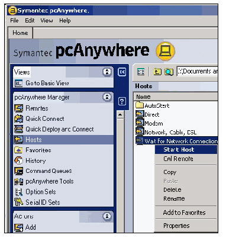
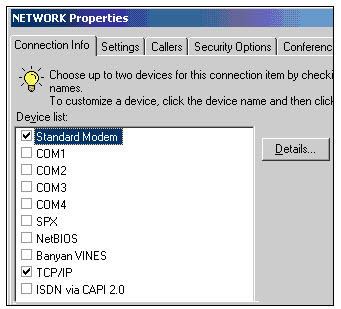
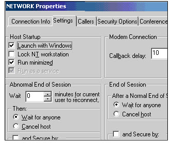
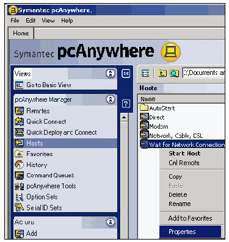

| Start PcAnywhere below V11.5
|
Perform these steps, on site, to start the pcAnywhere Host function on the console PC running pcAnywhere below V11.5. Starting the pcAnywhere Host function allows the PC to answer when a call is received.
- From the Windows NT desktop, select
.
Note: The pcAnywhere application window opens.
- Select
Be A Host PC from the menu.
- Double-click on the
Network icon.
Note: If a
cancel host message is displayed, select
OK. pcAnywhere might have been running already, but was not accepting calls.
- The pc Host function starts and the PC waits to answer incoming calls on the network and on the modem. The pcAnywhere window closes and a
waiting for connection icon is displayed near the clock at the bottom of the screen.
Note:
- To cancel the pcAnywhere host, right-click on the
waiting for connection icon, and then select
cancel host from the menu.
- If restarting the network host does not correct a failure to answer a modem call, then verify the network host settings or cancel the network host and launch the modem host. A network conflict can interfere with starting network hosts.
|
| Start PcAnywhere V11.5 and above
|
Perform these steps, on site, to start the pcAnywhere Host function on the console PC running pcAnywhere V11.5 and above. Starting the pcAnywhere Host function allows the PC to answer when a call is received.
- Select the
[Windows] key to bring up the toolbar. Double-click on the
pcAnywhere icon in the lower right corner near the clock. If there is no pcAnywhere icon, then proceed to step 3.
- Select
Cancel.

- In the Cancel Host window, select
Yes.
- From the Windows XP desktop, select
.
Note: The pcAnywhere application window opens.
- Select
Hosts on the left side of the screen. In the right side of the screen, right-click on the
Wait for Network Connection, and then select
Start Host.
Note: If
Wait for Network Connection is not a host option, then verify that the file pathway is
C:\Documents and Settings\All Users\Application Data\Symantec\pcAnywhere\Hosts. The file pathway is located above the large white box listing hosts. The file pathway should not contain \AutoStart.

|
| Confirm settings PcAnywhere below V11.5
|
Perform these steps to confirm the pcAnywhere settings on the console PC for pcAnywhere below V11.5.
Note: Use this procedure if pcAnywhere remote control is unable to connect to the console PC after the PC reboots, but was able to connect after manually launching the pcAnywhere modem host.
- From the Windows NT desktop, select
.
Note: The pcAnywhere application window opens.
- Select
Be A Host PC from the menu.
- Select
Connection Info. Verify that the
Standard Modem and the
TCP/IP Device List options are checked.

Note:
- The settings are password protected, so they should never be misconfigured accidentally.
- The DTx PC normally has the
Network connection icon set to launch with windows. This connection has the TCP/IP device and the modem device options selected so that calls from either port are answered. The network connection is used when calling the console PC using a laptop PC from the network ports provided on the instrument. The modem connection is used for remote diagnostics.
- Select the
Settings tab and verify that the
Host Startup Launch with Windows option is selected.

Note: The settings are password protected, so they should never be misconfigured accidentally.
- A password might be requested to change the properties. Use the default password Access2 or unicel.
|
| Confirm settings PcAnywhere V11.5 and above
|
Perform these steps to confirm the pcAnywhere settings on the console PC for pcAnywhere V11.5 or above.
Note: Use this procedure if pcAnywhere remote control is unable to connect to the console PC after the PC reboots, but was able to connect after manually launching the pcAnywhere modem host.
- From the Windows XP desktop, select
.
Note: The pcAnywhere application window opens.
- Select
Hosts on the left side of the screen. In the right side of the screen, right-click on the
Wait for Network Connection, and then select
Start Host.

Note: If
Wait for Network Connection is not a host option, then verify that the file pathway is
C:\Documents and Settings\All Users\Application Data\Symantec\pcAnywhere\Hosts. The file pathway is located above the large white box listing hosts. The file pathway should not contain \AutoStart.
|
| Adjust modem settings
|
Adjust the modem settings on the PC performing pcAnywhere dialing.
- Select
.
- Select the
Modem tab.
- Double-click on the modem.
- Select the
Advanced tab.
- Select
Advanced settings.
- Lower the settings for receive and transmit buffers.
- Select
.
- Attempt to reconnect with pcAnywhere.
- Reset the modem settings to default by repeating steps 1 to 5, and selecting the
Default button.
|